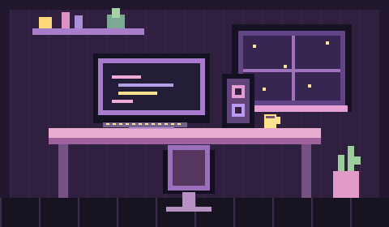

PLAYER 01 · LESLIE COELLO
Código, café
y un mundo
de píxeles.
Hola, soy Leslie. Estudio Ingeniería en Software y este es mi rincón para aprender, crear y compartir lo que construyo.
Explora mi proyecto ↓CUARTO SEMESTRE / SIGUIENTE NIVEL: SEGUIR CREANDO

01 / MI PERSONAJE
En modo aprendizaje.
Siempre con curiosidad.
Soy Leslie Coello, estudiante de cuarto semestre de Ingeniería en Software. Uso Java, Python y JavaScript, trabajo con HTML y CSS, y conozco Oracle. Este espacio reúne lo que voy construyendo durante mi camino. Cuando no estoy programando, me gusta jugar en la computadora.
02 / INVENTARIO
Herramientas en mi mochila.
03 / PROYECTO JUGABLE
Pixel Focus✦
Una pequeña misión: concentrarte durante 25 minutos y tomar un descanso. Un temporizador Pomodoro que puedes usar aquí mismo.
- Sesiones de enfoque y descansos.
- Pausa y reinicia cuando lo necesites.
- Funciona en tu navegador.
Tu próxima misión empieza aquí.
25 MIN ENFOQUE · 5 MIN DESCANSO · 15 MIN LARGO
CONTINUAR PARTIDA